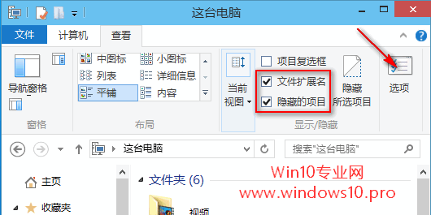
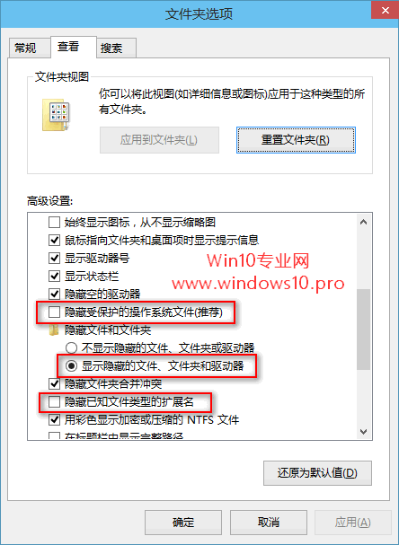
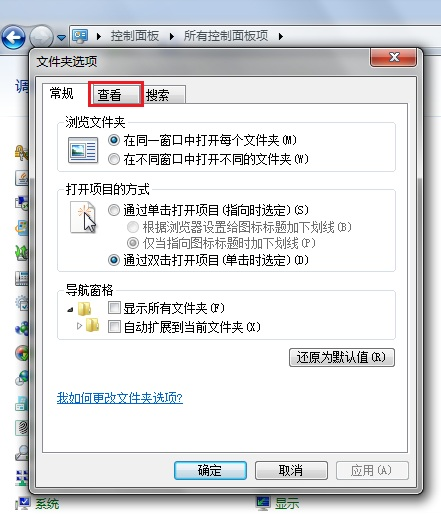
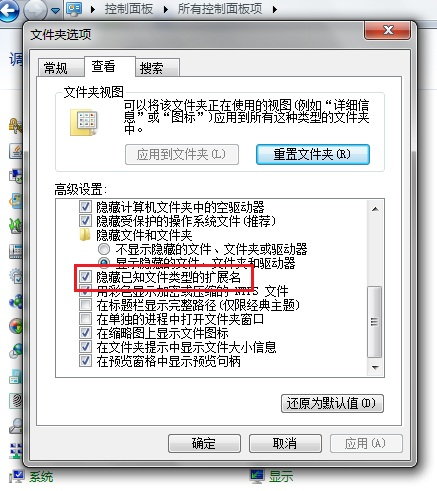
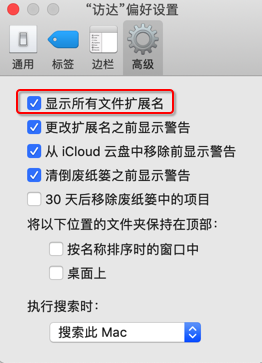
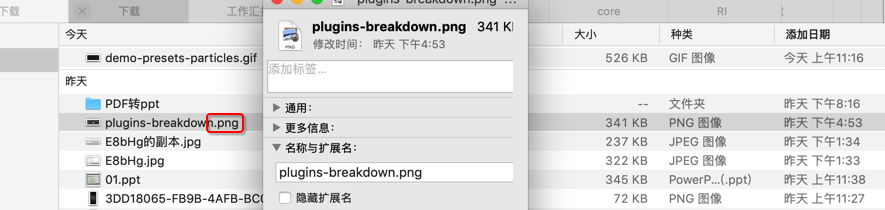
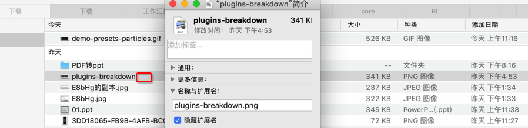

显示文件后缀名
关于如何设置去显示文件后缀名：
- Windows
- Win10
- 文字：
资源管理器->查看->勾选 或 取消勾选文件扩展名 - 截图
- 
- 进一步
- 想要显示被隐藏的操作系统文件
- 文字
- 勾选
文件扩展名和隐藏的项目即可显示文件扩展名和普通的隐藏文件、文件夹或驱动器 - 但是还不能显示被隐藏的操作系统文件
- 点击
选项图标打开文件夹选项窗口，切换到查看选项卡 - 在下面的
高级设置中取消勾选隐藏受保护的操作系统文件 - 同时你会发现刚才所做的勾选
文件扩展名和隐藏的项目的操作在这里同样可以通过选中显示隐藏的文件、文件夹或驱动器和取消勾选隐藏已经文件类型的扩展名来实现。
- 勾选
- 截图：
- 
- 文字
- 想要显示被隐藏的操作系统文件
- 文字：
- Win7
- 文字
控制面板->文件夹选项->查看->高级设置->隐藏已知文件类型的扩展名
- 截图

- 
- 
- 文字
- Win10
- Mac
- 如何设置是否显示文件名后缀
- 文字：访达
Finder->偏好设置->高级->勾选 或 取消勾选显示所有文件扩展名 - 截图：
- 
- 文字：访达
- 举例
- 某png图片是否显示文件后缀名
- 显示
- 
- 不显示
- 
- 另外
- 请注意此处 种类是：
PNG图像- 表示是后缀是
.png的图像文件=照片
- 表示是后缀是
- 请注意此处 种类是：
- 显示
- 更多解释
- 在 Mac 上显示或隐藏文件扩展名 - Apple 支持
- 某png图片是否显示文件后缀名
- 如何设置是否显示文件名后缀